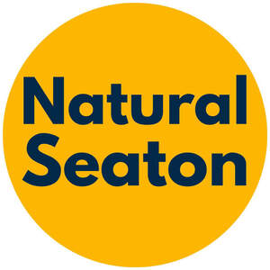

Trade Mark Journal No.2025/031 1 August 2025
UK00004237561 22 July 2025 (39,41)

- Class 39
- Providing tourist travel information; Provision of tourist travel information; Providing tourist travel information, via the Internet; Travel information; Tourist guide services; Providing information to tourists relating to excursions and sightseeing; Transportation information; Information (Transportation -); Travel guide and travel information services; Sightseeing [tourism].
- Class 41
- Provision of visitor attractions for cultural purposes; Entertainment services in the nature of an amusement park show; Provision of visitor attractions for entertainment purposes; Entertainment in the nature of a water park and amusement center; Amusement park and theme park services; Amusement and theme park services; Amusement park services with a theme of films; Production of amusement park shows; Amusement and theme parks, fairs, zoos and museums; Amusement parks; Entertainment in the nature of fireworks displays; Entertainment in the nature of roller derbys; Providing amusement park facilities; Provision of amusement parks; Entertainment in the nature of ongoing game shows; Entertainment in the nature of air shows; Education services provided by tourist resort establishments; Entertainment in the nature of ethnic festival; Entertainment in the nature of laser shows; Theme park services; Entertainment in the nature of light shows; Holiday camp amusement centre services; Entertainment in the nature of circuses; Providing online entertainment in the nature of game shows; Entertainment in the nature of live performances and personal appearances by a costumed character; Amusement services; Ticket reservation for cultural events; Entertainment in the nature of orchestra performances; Entertainment in the nature of gymnastic performances; Arranging for ticket reservations for shows and other entertainment events; Recreational park services; Museum exhibitions; Popular entertainment services; Providing will-call ticket services for entertainment, sporting and cultural events; Provision of amusement facilities; Entertainment in the nature of theater productions; Gardens for public admission; Entertainment services in the form of cinema performances; Entertainment services in the nature of contests; Providing online entertainment in the nature of game tournaments; Mobile petting zoo services; Entertainment, sporting and cultural activities; Educational services relating to the conservation of nature; Organisation of entertainment and cultural events; Publication of directories relating to tourism; Education services relating to the agricultural industry; Hospitality services (entertainment); Wildlife centre services [for recreational purposes]; Rental services relating to equipment and facilities for education, entertainment, sports and culture; Education, entertainment and sport services; Corporate hospitality (entertainment); Education services relating to industry; Entertainment in the nature of dance performances; Entertainment in the nature of live performances by musical bands; Organising of festivals; Entertainment in the nature of live performances by rock groups; Entertainment in the nature of dinner theater productions; Organising community cultural events; Organisation of festivals; Organizing cultural and arts events; Festivals (Organisation of -) for cultural purposes; Production of music concerts; Organizing community sporting and cultural events; Staging of light entertainment productions; Entertainment services in the nature of competitions; Organisation of musical concerts; Education and training relating to nature conservation and the environment; Education services relating to conservation; Education services relating to conservation of the environment; Education services relating to water management; Education services relating to water pollution; Recreation information; Entertainment information; Educational information; Education information; Information (Education -); Educational information services; Entertainment information services; Providing information about cultural activities; Information relating to cultural activities; Recreation (Information relating to -); Ticket information services for entertainment events.
Modern Electricity Tramways LTD
Seaton Tramway (Enterprises) Ltd